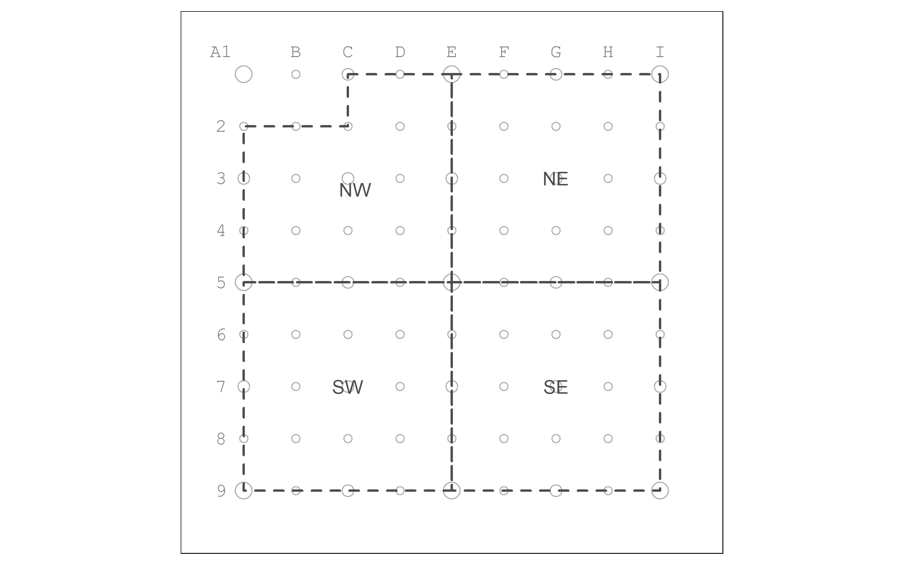
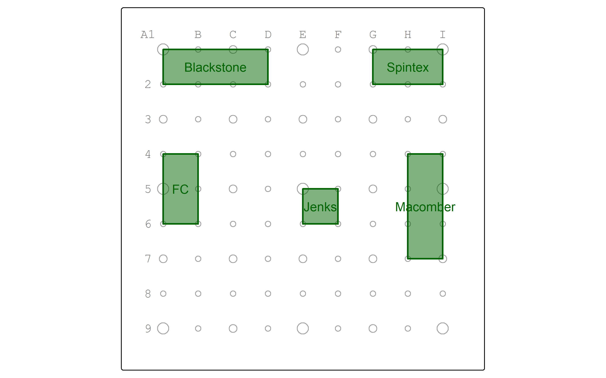
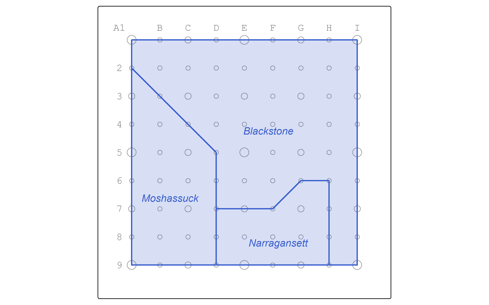

Learn Simple Features for Spatial Analysis in R
2025-02-16
Chapter 1 Introduction
1.1 Abstract
This project is a resource for learning geographic analysis using primarily vector data with the sf for R. To do so, we use a simplified teaching data set inspired by the city of Central Falls, Rhode Island.
1.2 Study Metadata
Key words: Central Falls, sf, vector analysis, teaching demonstrationSubject: Social and Behavioral Sciences: Geography: Geographic Information SciencesDate created: 2025-02-12Date modified: 2025-02-12Spatial Coverage: Central Falls, Rhode Island, OSM:191213Spatial Resolution: 250 metersSpatial Reference System: EPSG:6567 NAD83(2011) / Rhode Island
1.3 Computational environment in R
We set up a computational environment for spatial analysis in R using the groundhog package.
This package allows you to specify a date at which the analysis was developed and a list of packages required.
From there, groundhog checks for a version of R appropriate for that date and installs the latest versions of the required packages as of that date.
This is particularly important in the context of spatial data science because the packages we use have a history of major version upgrades without backward capability.
For example, version 4.0 of the tmap package for thematic mapping cannot be used to run all code written for version 3: most of the code will work with warnings, but not all.
In this book, we use:
hereto manage reproducible file pathstidyversefor data wrangling and graphingsffor vector data and algorithms aligned with the simple features standardstmapfor cartographylwgeomfor minimum bounding circles and geodesic calculations
The code block below may need to be run multiple times to get the full environment working. You may also need to respond to prompts and warnings output to the console, including:
okfor permission to write groundhog files to the groundhog folder- install the correct version of R for the time given and start an R session with that version
- restart the R session and re-run the code block
packages <- c("here", "tidyverse", "sf", "tmap", "lwgeom")
# force all conflicts to become errors
# if you load dplyr and use filter(), R has to guess whether you mean dplyr::filter() or stats::filter()
# the conflicted package forces you to be explicit about this
# disable at your own peril
# https://conflicted.r-lib.org/
require(conflicted)## Loading required package: conflicted# load and install required packages
# https://groundhogr.com/
if (!require(groundhog)) {
install.packages("groundhog")
require(groundhog)
}## Loading required package: groundhog## Attached: 'Groundhog' (Version: 3.2.2)## Tips and troubleshooting: https://groundhogR.com# this date will be used to determine the versions of R and your packages
# it is best practice to keep R and its packages up to date
groundhog.day <- "2025-02-01"
# you may want to use set.groundhog.folder() to choose where to install packages under groundhog
# the folder should be on the same drive as your R installation, and should not be synced to the cloud
# this replaces any library() or require() calls
groundhog.library(packages, groundhog.day)## here() starts at C:/git/opengisci/Learn-Simple-Features## ── Attaching core tidyverse packages ─────────────────────────────────────────────────────────────── tidyverse 2.0.0 ──
## ✔ dplyr 1.1.4 ✔ readr 2.1.5
## ✔ forcats 1.0.0 ✔ stringr 1.5.1
## ✔ ggplot2 3.5.1 ✔ tibble 3.2.1
## ✔ lubridate 1.9.4 ✔ tidyr 1.3.1
## ✔ purrr 1.0.2
## Linking to GEOS 3.13.0, GDAL 3.10.1, PROJ 9.5.1; sf_use_s2() is TRUE
##
## Linking to liblwgeom 3.0.0beta1 r16016, GEOS 3.13.0, PROJ 9.5.1
##
##
## Attaching package: 'lwgeom'
##
##
## The following object is masked from 'package:sf':
##
## st_perimeter
##
##
## [36mSuccessfully attached 'here_1.0.1'[0m
##
## [36mSuccessfully attached 'tidyverse_2.0.0'[0m
##
## [36mSuccessfully attached 'sf_1.0-19'[0m
##
## [36mSuccessfully attached 'tmap_4.0'[0m
##
## [36mSuccessfully attached 'lwgeom_0.2-14'[0m# set up default knitr parameters: https://yihui.org/knitr/options/
knitr::opts_chunk$set(
echo = TRUE,
fig.retina = 4,
fig.width = 8,
fig.path = paste0(here("results", "figures"), "/")
)Record the established computational environment for R.
sessionInfo()
# alternatively, use devtools::session_info() for better results
writeLines(
capture.output(sessionInfo()),
here("procedure", "environment", paste0("r-environment-", Sys.Date(), ".txt"))
)
# save package citations
packages <- c("here", "tidyverse", "sf", "tmap", "lwgeom")
knitr::write_bib(c(packages, c("knitr", "bookdown", "rmarkdown")),
here('packages.bib'))1.4 Hello, Central Falls world
Let’s read a reference point grid from the geopackage cf_given in the layer pointgrid.
As we read the data in, we’ll recalculate x- and y- offsets for label placement in tmap.
Those offsets worked well to place the grid reference letters and numbers just outside the grid in QGIS layouts, but they need to be adjusted to achieve the same placements in tmap.
pointgrid <- st_read(here("data", "raw", "public", "cf_given.gpkg"),
layer="pointgrid") |>
mutate(xOff = xOff / 4,
yOff = yOff / -4,
order = ifelse(order == 0, 0.5, order),
label = ifelse(is.na(label), "", label))## Reading layer `pointgrid' from data source
## `C:\git\opengisci\Learn-Simple-Features\data\raw\public\cf_given.gpkg'
## using driver `GPKG'
## Simple feature collection with 81 features and 8 fields
## Geometry type: POINT
## Dimension: XY
## Bounding box: xmin: 107710.4 ymin: 88292.71 xmax: 109710.4 ymax: 90292.71
## Projected CRS: NAD83(2011) / Rhode IslandAs we load the data, sf reports some basic geographic metadata about the layer, including the geometry type, bounding box (geographic extent), and coordinate reference system.
Let’s display the grid.
We make the bbox equal to a buffered pointgrid to add some margin space to the map figure.
pointgrid_map <- pointgrid |>
tm_shape(bbox = st_buffer(pointgrid, 250)) +
tm_symbols(col_alpha = 0.5,
fill_alpha = 0,
size = "order",
size.legend = tm_legend_hide()) +
tm_text("label",
ymod="yOff",
xmod="xOff",
col="grey50",
fontfamily = "mono")
pointgrid_mapLet’s read a layer of Central Falls zones, the local geographic unit of enumeration and neighborhood governance.
## Reading layer `zones' from data source
## `C:\git\opengisci\Learn-Simple-Features\data\raw\public\cf_digitized.gpkg'
## using driver `GPKG'
## Simple feature collection with 4 features and 4 fields
## Geometry type: MULTIPOLYGON
## Dimension: XY
## Bounding box: xmin: 107710.4 ymin: 88292.71 xmax: 109710.4 ymax: 90292.71
## Projected CRS: NAD83(2011) / Rhode IslandLet’s inspect the zones attribute table.
| zone | pop | minority | poverty |
|---|---|---|---|
| NW | 5300 | 4300 | 2000 |
| NE | 4800 | 3800 | 1350 |
| SE | 4400 | 3200 | 1400 |
| SW | 4600 | 3600 | 1300 |
Notice how the id column has been converted into row labels.
There are four other columns:
zoneis character string with the zone name based on compass direction.popis an integer count of the total populationminorityis an integer count of the population reporting as any minority identity on the censuspovertyis an integer count of the population with household income below the poverty level
Let’s map the zones.
zones_map <- zones |>
tm_shape() +
tm_polygons(col = "grey30",
lwd = 2,
lty = "dashed",
fill_alpha = 0) +
tm_text("zone",
col="grey30")
pointgrid_map +
zones_map
Let’s load in the parks.
## Reading layer `parks' from data source
## `C:\git\opengisci\Learn-Simple-Features\data\raw\public\cf_digitized.gpkg'
## using driver `GPKG'
## Simple feature collection with 5 features and 1 field
## Geometry type: MULTIPOLYGON
## Dimension: XY
## Bounding box: xmin: 107710.4 ymin: 88792.71 xmax: 109710.4 ymax: 90292.71
## Projected CRS: NAD83(2011) / Rhode IslandLet’s inspect the parks attribute table.
| park |
|---|
| Blackstone |
| Spintex |
| Macomber |
| Jenks |
| FC |
There is just one field, park, containing the park names.
Let’s map the parks.
working_color = "darkgreen"
parks_map <- parks |>
tm_shape() +
tm_polygons(col = working_color,
lwd = 2,
fill = working_color,
fill_alpha = 0.5) +
tm_text("park",
col = working_color)
pointgrid_map +
parks_map
Let’s load in the watersheds
## Reading layer `watersheds' from data source
## `C:\git\opengisci\Learn-Simple-Features\data\raw\public\cf_digitized.gpkg'
## using driver `GPKG'
## Simple feature collection with 3 features and 1 field
## Geometry type: MULTIPOLYGON
## Dimension: XY
## Bounding box: xmin: 107710.4 ymin: 88292.71 xmax: 109710.4 ymax: 90292.71
## Projected CRS: NAD83(2011) / Rhode IslandLet’s inspect the watersheds attribute table.
| name |
|---|
| Moshassuck |
| Narragansett |
| Blackstone |
Let’s map the watersheds.
working_color = "royalblue3"
watersheds_map <- watersheds |>
tm_shape() +
tm_polygons(col = working_color,
lwd = 2,
fill = working_color,
fill_alpha = 0.2) +
tm_text("name",
col = working_color,
ymod = -1,
fontface = "italic")
pointgrid_map +
watersheds_map